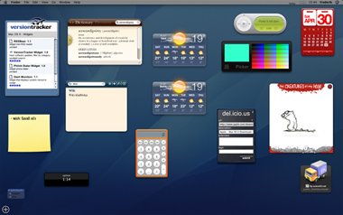

Dashboard na één dag...
zaterdag 30 april 2005 | Zomaar
Zo ziet Dashboard er uit na één dag Tiger. Als dat maar goed afloopt ;-)

zaterdag 30 april 2005 | Zomaar
Zo ziet Dashboard er uit na één dag Tiger. Als dat maar goed afloopt ;-)

Frederik Vandaele op 6 mei 2005
Fijn plan. Doen! Ik help je graag verder mocht je vragen hebben.
Simon op 6 mei 2005
Nog maar 2 weken overgestapt op Apple en ik dacht dat ik me nog wel een paar weken kon amuseren met alle features in Panther uit te zoeken maar... auch, wat is het moeilijk om niet naar de winkel te lopen!
Waarom zit ik hier eigenlijk nog?!
Jef Pober op 6 mei 2005
Ik heb gehoord dat je als arme student bij Apple op 3 jaar zou kunnen afbetalen. Binnenkort hoop ik aan mijn Appleplan vorm te kunnen geven ...
Siegfried op 6 mei 2005
Hmm, meer en meer krijg ik zin om ook naar Apple over te stappen... design & kwaliteit in één.